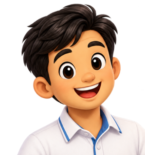

0
0
with Teacher Francis

Developed by Sir Francis Alex T. Mongcopa
Bumalik
1 / 5
★★★
Pumili ng salita
↑↓ salita • ←→ pantig/pahina • Enter pakinggan
Nakaraan
Basahin
Awto
Susunod
Mga Tanong
Developed by Sir Francis Alex T. Mongcopa
Settings • Ayos
Tunog • Sounds
Musika sa GubatSerene forest music
Lakas ng MusikaForest music volume
Mahusay!
BadgeNew Exclusive Badge
Score3 / 3 stars
A polished collector-style badge has been added to your rewards.